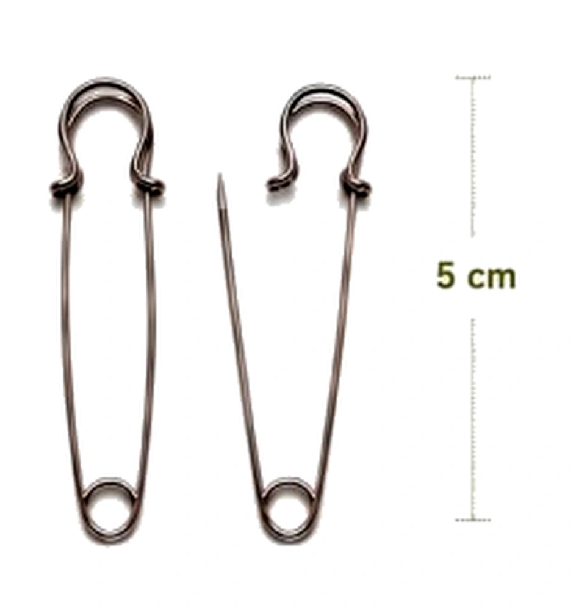
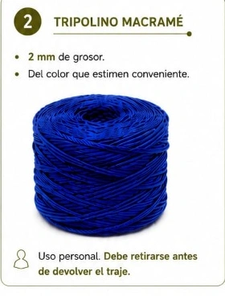

Cada traje de Tobas se compone de 8 piezas oficiales confeccionadas para resistir saltos y giros en escenario. Conoce la función de cada una y su costo individual de reposición en caso de daño o extravío.
Se entregan limpias, planchadas e inventariadas en cajas rotuladas por curso.
Valor de reposición traje completo:$529.000
Fotografía Oficial · PenachoReposición: $286.000
01 · Cabeza
Penacho de Plumas
Tocado tradicional montado sobre base rígida forrada en tela andina con abanico de plumas de avestruz. Se transporta en una sola fila sobre el asiento trasero.
Costo de reposición:$286.000
Fotografía Oficial · TorsoReposición: $50.000
02 · Torso (Doble Prenda)
Peto (Mujer) / Chaqueta (Hombre)
Prenda superior bordada con lentejuelas e hilados brillantes. Lleva ojalillos reforzados en la espalda para entrelazar el cordón de ajuste.
Costo de reposición:$50.000
Fotografía Oficial · InferiorReposición: $50.000
03 · Inferior (Doble Prenda)
Falda (Mujer) / Faldón (Hombre)
Falda femenina con flecos de colores o faldón masculino dividido en paneles laterales para permitir saltos atléticos y giros sin restricción.
Costo de reposición:$50.000
Fotografía Oficial · BrazosReposición: $36.000
04 · Brazos (Par)
Par de Puñeras (2 piezas)
Brazaletes con aplicaciones andinas y flecos plumíferos. Se cierran con velcro industrial y amplifican el movimiento de brazos en la coreografía.
Costo de reposición (par):$36.000
Fotografía Oficial · PiernasReposición: $57.000
05 · Piernas (Par)
Par de Polainas (2 piezas)
Protectores de pantorrilla con detalles geométricos y plumas. Se ajustan con cordón tripolino por detrás. Se inventarían y cobran por par completo.
Costo de reposición (par):$57.000
Fotografía Oficial · AccesorioReposición: $36.000
06 · Accesorio de Baile
Arco Ceremonial Tobas
Arco artesanal de madera pulida decorado con cintas y cuerdas festivas. Elemento icónico que portan tanto hombres como mujeres durante el baile.
Costo de reposición:$36.000
Tallaje Desacoplado
Diferencias entre Modelo Mujer y Hombre
El 37% de los estudiantes utiliza tallas distintas arriba y abajo. Nuestro vestuario permite solicitar tallas independientes sin ningún recargo.
Componente
Traje Mujer
Traje Hombre
Prenda Superior
Peto ajustado con ojalillos traseros
Chaqueta bordada de corte masculino
Prenda Inferior
Falda tradicional con flecos de colores
Faldón dividido en paneles laterales
Penacho
Idéntico para ambos: plumas naturales de avestruz en el color del curso
Puñeras (par)
2 unidades por bailarín, cierre con velcro industrial
Polainas (par)
2 unidades por bailarín, ajuste con cordón tripolino
Arco
Arco ceremonial de madera decorado a mano
Sol y Tierra
ELEMENTOS DE USO PERSONAL
Para utilizar el traje, deberás contar con los siguientes elementos de uso personal.
1
ALFILER DE GANCHO
MEDIDA OFICIAL
✓ Metálico de acero✓ 5 cm de largo exacto✓ 1 por alumno

📏 Referencia técnica con reglaNo usar alfileres chicos
2
TRIPOLINO MACRAMÉ
USO PERSONAL
✓ 2 mm de grosor✓ Color a elección✓ 8 a 10 metros

👤 Elemento de uso e higiene personalRetirar antes de devolver
IMPORTANTEEL TRAJE DEBE DEVOLVERSE SIN EL TRIPOLINO
El tripolino es un elemento de uso personal y debe retirarse antes de devolver el traje.
📍¿DÓNDE COMPRAR?
Puedes encontrar estos elementos en tiendas de cordonería ubicadas en: